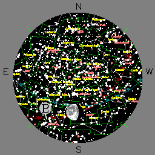
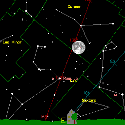
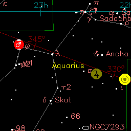

by John Walker
Welcome to Your Sky, the interactive planetarium of the Web. You can produce maps in the forms described below for any time and date, viewpoint, and observing location. If you enter the orbital elements of an asteroid or comet, Your Sky will compute its current position and plot it on the map. Each map is accompanied by an ephemeris for the Sun, Moon, planets, and any tracked asteroid or comet. A control panel permits customisation of which objects are plotted, limiting magnitudes, colour scheme, image size, and other parameters; each control is linked to its description in the help file.
Your Sky provides three ways to view the sky with links, where appropriate, among the various presentations.
 The sky map shows the entire sky as viewed from a given location at a specified time and date. A stereographic projection is used, as is the convention for printed star maps.
To make a sky map, enter the latitude and longitude of your observing
site in the boxes below (be sure to check the correct
“North/South” and “East/West” settings) and
press the “Make Sky Map” button below the form. Your
Sky will deliver a map showing the sky above the location you
specified at the current time. On that reply page you can enter
different dates and times, observing locations, display options, and
orbital elements of asteroids and comets you wish to track. If you
don't know your latitude and longitude, you can specify them by
selecting a nearby city.
 Horizon Views, showing the stars above the horizon as seen from a specified observing site at a given date and time. The viewing direction (azimuth) may be set to cardinal points on the compass or arbitrarily by entering a value in degrees.
To make a horizon view, enter the latitude and longitude of your
observing site in the boxes below (be sure to check the correct
“North/South” and “East/West” settings),
select the direction in which you wish to view the horizon, then press
the “Make Horizon View” button below the form. Your
Sky will deliver a map showing the view toward the horizon in the
given direction at the present time. On that reply page you can enter
different dates and times, observing locations, viewing directions,
display options, and orbital elements of asteroids and comets you wish
to track. If you don't know your latitude and longitude, you can
specify them by selecting a
nearby city, then navigate to the Horizon View
from the resulting Sky Map page.
 Your Sky's Virtual Telescope is your Humble Soft Telescope of the Web. Controls allow you to set time and date, aiming point, orbital elements to track an asteroid or comet, and a variety of viewing options. You can compose a request with custom settings and save the results in your browser's hotlist or bookmark table, allowing direct access to the virtual telescope with all the controls preset to your own preferences.
To launch the virtual telescope, enter the coordinates
at which it should be aimed in the boxes below and push the
“Aim Virtual Telescope” button. You also aim the
virtual telescope at objects in the sky chosen
from a variety of object
catalogues.
Windows users can create planetarium displays like this in real time, on their own machines, as well as view the Earth, sky, stars at the horizon, track Earth satellites, and more with Home Planet, my public domain Earth/Space/Sky simulator. Other related resources on this site are:
All of these packages and more can be located from my home page.
Your Sky would have been enormously more difficult to implement without the help of the freely distributed software mentioned in the credits.
|
by John Walker 18th April 2003 Updated: 4th February 2019 |
|